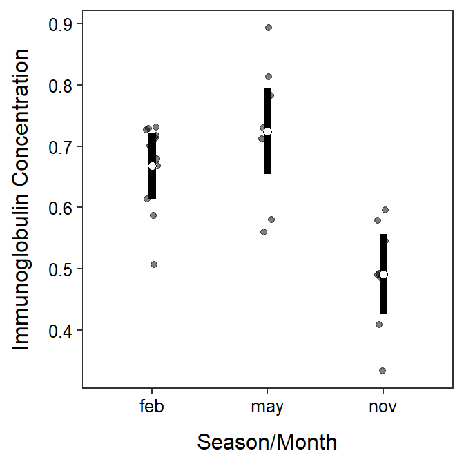

Module 6 One-Way Multiple Comparisons
A significant result (i.e., reject H0) in a one-way ANOVA indicates that the means of at least one pair of groups differ. It is not yet known whether all means differ, all but two means differ, only one pair of means differ, or any other possible combination of differences. Thus, specific follow-up analyses to a significant one-way ANOVA are needed to identify which pairs of means are significantly different.
A significant one-way ANOVA only indicates that at least one pair of means differ. Follow-up analyses are required to determine which pairs differ.
6.1 Multiple Comparison Problem
The most obvious solution to identify which pairs of means differ is to perform a 2-sample t-test for each pair of groups. Unfortunately, this seemingly simple answer has at least two major problems. First, the number of 2-sample t-tests needed increases dramatically with increasing numbers of groups. Second, the probability of incorrectly concluding that at least one pair of means differs when no pairs actually differ increases dramatically with increasing numbers of groups. Of these two issues, the second is much more problematic and needs to be better understood.
In any one comparison of two means the probability of incorrectly concluding that the means are different when they are actually not different is α. This incorrect conclusion is called a pairwise Type I error because it relates to only one comparison of a pair of means.
In a situation with three (\(I\)=3) groups (say A, B, C) then there are three pairwise comparisons (\(k\)=3) to be made (A to B, A to C, and B to C). A pairwise error could be made on any of these three tests. Making a Type I error on at least one of these multiple pairwise tests is called an experiment-wise Type I error because it involves all pairwise comparisons in the experiment at hand.
It is important that you notice at least in the definition of the experiment-wise error rate. For example, in three comparisons, the incorrect conclusion could be for the first pair, the second pair, the third pair, the first and second pairs, the first and third pairs, the second and third pairs, or all three pairs!!
A Type I error is rejecting H0 when H0 is actually true. In a two-sample t-test, a Type I error is concluding that two means are significantly different when they are not different.
Pairwise error rate: The probability of a Type I error in a single comparison of two means. Sometimes called a comparison-, individual-, or test-wise error rate.
Experiment-wise error rate: The probability of at least one Type I error in a set of multiple comparisons of pairs of means. Sometimes called the family-wise error rate.
Figure 6.1 demonstrates the two issues related to multiple comparisons. First, the x-axis labels show how the number of pairwise comparisons (\(k\)) increases quickly with increasing number of groups (\(I\)) in the study. For example, six groups (\(I\)=6) is not a complicated study, but it results in fifteen pairwise comparisons (\(k\)=15). More importantly the line and point labels in the figure show how the experiment-wise error rate increases quickly and dramatically with increasing number of groups. For example, the experiment-wise error rate for six (\(I\)=6) groups is over 0.50.25 Thus, it is nearly a coin flip that at least one error will be made in all paired comparisons among six groups. Making an error more than 50% of the time in such a simple study is not acceptable and must be corrected.
Figure 6.1: Relationship between the number of groups (I) in an analysis, the number of pairs of means that would need to be tested (k), and the probability of making one or more Type I errors in all comparisons. Note that alpha=0.05.
The experiment-wise error rate increases dramatically with increasing numbers of treatment groups.
6.2 Correction Methods
There are many procedures designed to control experiment-wise error rate at a desired level (usually α). You will here a variety of names like Tukey’s HSD, Bonferroni’s adjustment, Sidak’s method, and Scheffe’s method.26 For simplicity, only the Tukey-Kramer honestly significantly different (i.e., Tukey’s HSD or Tukey’s) method will be used here.
As simplistically as possible, Tukey’s test computes the t test statistic for each pair of means as if conducting a 2-sample t-test. However, this test statistic is compared to a “Studentized range” rather than a t distribution to compute the p-value. These “adjusted” p-values are then simply compared to α to make a decision about the means of each pair. The net result of this modification however is that the experiment-wise error rate across all comparisions is controlled at the desired level when the group sample sizes are equal and is slightly conservative when the group sample sizes differ.
6.3 Multiple Comparisons in R
Tukey’s procedure should only be implemented if multiple comparisons are needed!! In other words, only use this method following a significant One-Way ANOVA result; i.e., H0 was rejected such that it appears that there is some difference among group means. Therefore, a One-Way ANOVA must be performed first as described in Section 5.2.
The ANOVA table from the analysis of immunoglobulin levels in opossums across seasons that was begun in the Module 5 is shown below.
lm1 <- lm(imm~season,data=opp)
anova(lm1)#R> Analysis of Variance Table
#R>
#R> Response: imm
#R> Df Sum Sq Mean Sq F value Pr(>F)
#R> season 2 0.23401 0.117005 14.449 7.609e-05
#R> Residuals 24 0.19435 0.008098Once again, there appears to be some significant difference in the mean immunoglobulin values among the three months (0.0001<α). Thus, a multiple comparisons procedure is warranted here to identify exaclty which pairs of means differ.
There are a number of functions and packages in R for computing Tukey’s multiple comparisons. I prefer to use functions in the emmeans package because those functions will generalize to other methods, some of which we will use in other modules and some of which you may use in more advanced statistics courses. The emmeans package must be attached with library() before its functions can be used.27
Tukey’s procedure is computed with a two-step process. First, use emmeans() with the lm() object as the first argument and a specs= argument with pairwise~ followed by the name of the variable that identifies the groups. The results from this function should be saved to an object.
mc <- emmeans(lm1,specs=pairwise~season)That saved object is then the first argument to summary(), which also uses infer=TRUE. This again should be saved to an object.28 The results are in two “sections” labeled as $emmeans and $contrasts.
( mcsum <- summary(mc,infer=TRUE) )#R> $emmeans
#R> season emmean SE df lower.CL upper.CL t.ratio p.value
#R> feb 0.668 0.0260 24 0.614 0.721 25.702 <.0001
#R> may 0.724 0.0340 24 0.654 0.795 21.299 <.0001
#R> nov 0.491 0.0318 24 0.425 0.557 15.433 <.0001
#R>
#R> Confidence level used: 0.95
#R>
#R> $contrasts
#R> contrast estimate SE df lower.CL upper.CL t.ratio p.value
#R> feb - may -0.0568 0.0428 24 -0.1636 0.0501 -1.326 0.3948
#R> feb - nov 0.1767 0.0411 24 0.0741 0.2792 4.301 0.0007
#R> may - nov 0.2334 0.0466 24 0.1171 0.3497 5.012 0.0001
#R>
#R> Confidence level used: 0.95
#R> Conf-level adjustment: tukey method for comparing a family of 3 estimates
#R> P value adjustment: tukey method for comparing a family of 3 estimatesThe $contrasts section contains the actual Tukey’s test for each pair of means. In these results the difference in group sample means is under estimate, a 95% confidence interval for the difference in means is under lower.CL and upper.CL, and a p-value for testing that the difference in group population means is 0 is under p.value. For example, the difference in group sample mean immunoglobulin between February and May is -0.0568, but the p-value suggests that the population mean immunoglobulin does not differ between February and May (p=0.3948). In contrast, it appears that the population mean immunoglobulin for opossums in November differed from both those in Feb (p=0.0007) and those in May (p=0.0001).
The differences of group means with 95% confidence intervals and p-values are shown in the $contrasts section of the results.
The $emmeans section contains the group sample means under emmean with 95% confidence intervals under lower.CL and upper.CL. For example, the sample mean immunoglobulin level for opossums in February was 0.668, with a 95% confidence interval from 0.614 to 0.721. The t.ratio and p.value in this section test if the group population mean is different than 0. These tests are not often of interest and can largely be ignored.
The group means with 95% confidence intervals are shown in the $emmeans section of the results.
A plot of group means with 95% confidence intervals using the results in $emmeans is slightly different than shown in Sections 4.8 and 5.2 because the raw data and the means with their confidence intervals are in separate data frames. While this method is slightly more complicated, it will generalize to a wider variety of situationst throughout the course.
The data= and mapping=aes() arguments are not included in the initial ggplot() because we will be drawing variables from two data frames. Thus, geom_jitter() below adds the raw data to the plot, jittered to decrease overlap; geom_errorbar() creates the error bars from the $emmeans object, and geom_point() simply overlays the mean from the $emmeans object. Note that in the code below you would only need to modify the two data= arguments, the three x= arguments (to the grouping variables), and the one y= argument in geom_jitter() (to the response variable).
ggplot() +
geom_jitter(data=opp,mapping=aes(x=season,y=imm),
alpha=0.5,width=0.05) +
geom_errorbar(data=mcsum$emmeans,
mapping=aes(x=season,ymin=lower.CL,ymax=upper.CL),
size=2,width=0) +
geom_point(data=mcsum$emmeans,mapping=aes(x=season,y=emmean),
size=2,pch=21,fill="white") +
labs(y="Immunoglobulin Concentration",x="Season/Month") +
theme_NCStats()